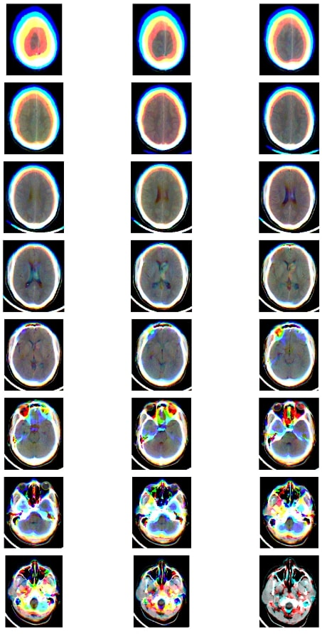

Pre-processing
Method-I

The threshold of BSD (brain, subdural, bone) windowing of single slice was taken and the CT scan was transformed into three windows: brain window (Level:40, Width: 80), subdural window (Level: 80, Width: 200) and bone window (Level: 600, Width:2000). The three windows were concatenated to form three channel images. This was followed by a resampling technique to get a little more spatial resolution from adjacent slices which kept the pixel spacing consistent, else it may be hard for the model to generalize. Finally, the image was cropped to focus on the informative part.
Method-II
The three adjacent slices of CT scan with brain window (Level:40, Width: 80) was concatenated to construct RGB (Red, Green, Blue) images. The CT scan metadata enabled the information of the spatially adjacent slices: R = St-1, G = St, B = St+1; where St is the slice of the CT scan. Finally, the image was cropped to focus on the informative part.